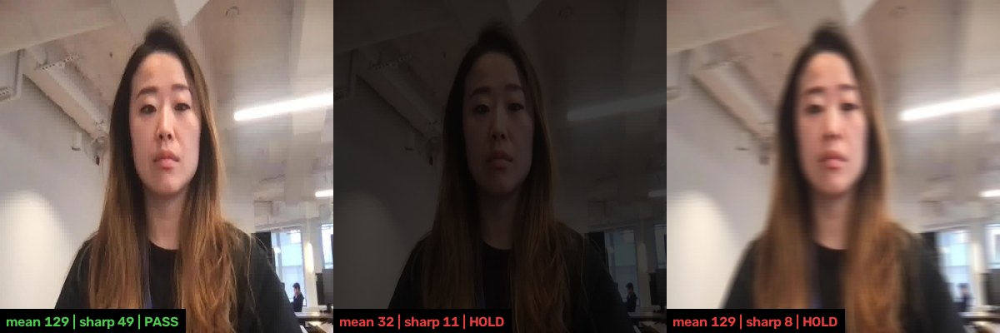
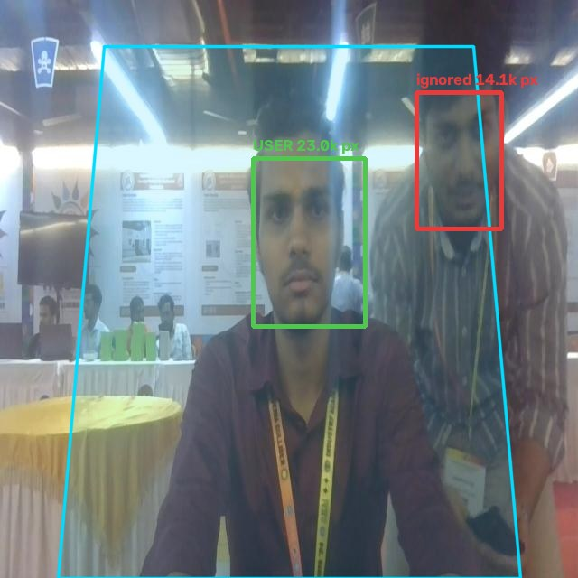
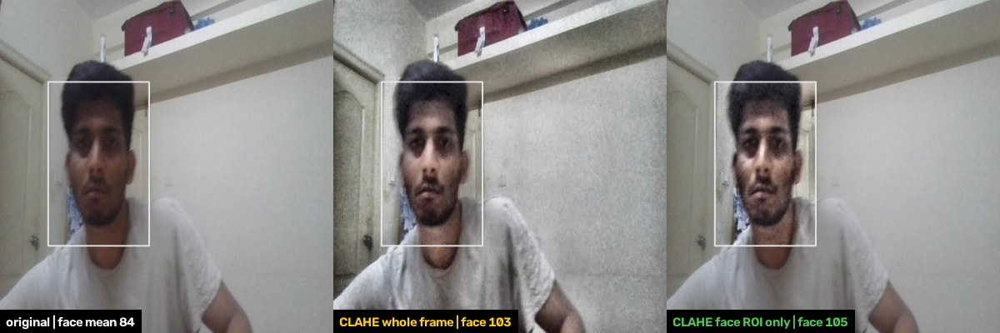
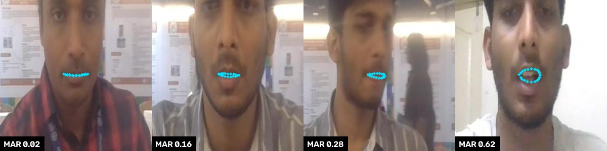
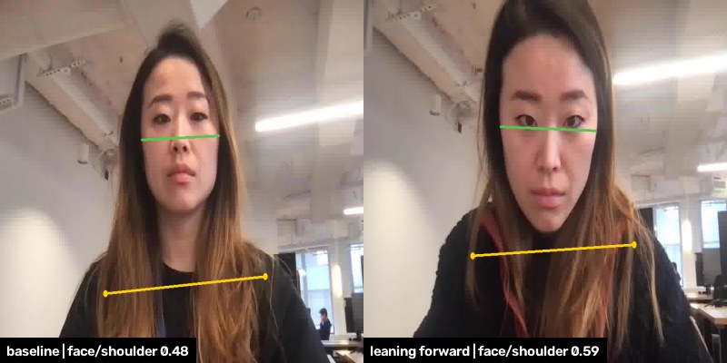

1. 전처리 계획
카메라 프레임이 모델 입력이 되기까지(추론 직전) 5단계. 핵심 결정은 셋입니다: 원본 해상도에서 얼굴을 자른다 · 보정은 얼굴 영역만, 효과가 입증될 때만 · 입력 정규화는 학습과 완전히 동일.
전원 주파수(60Hz)에 맞춰 노출 시간을 정하고, 자동 노출·화이트밸런스는 완만하게 하거나 캘리브레이션 뒤에 잠급니다.
노출 시간 = 1/120s의 정수배. UVC 컨트롤을 지원할 때만 적용합니다.
깜빡임과 밝기 출렁임은 프레임마다 모델 입력 분포를 흔듭니다. 입력을 안정시키는 것이 가장 싸고 효과적입니다. 컨트롤 지원 여부는 카메라마다 확인합니다.
평균 밝기와 선명도(Laplacian 분산)를 재서 불량 프레임은 보정하지 않고 버립니다. 상위 단계에는 "판정 보류"로 알립니다.
평균 휘도 40 미만 또는 220 초과(8bit), 선명도가 기준값의 30% 미만.
어두운 화면을 억지로 보정하면 입력이 바뀌어 잘못된 결과가 나옵니다.

축소한 프레임(640)에서 얼굴·상체 위치를 찾고 다음 프레임에도 이어 씁니다. 여러 얼굴이 잡히면 착석 영역 안에서 가장 큰 얼굴을 대상으로 고릅니다.
재검출은 1~2초마다, 또는 추적이 실패할 때만.
위치만 알면 되므로 작은 이미지로 충분합니다. 매 프레임 검출은 연산 부담이 큽니다.

원본 해상도에서 얼굴 영역을 잘라 모델 입력 크기로 리사이즈합니다. 롤 정렬(양 눈 수평, ±30° 이내)은 선택이며 기본 OFF입니다.
입력 192~256px, 얼굴 박스의 1.3~1.5배 여유.
축소본에서 자르면 입술 간격이 1~2px로 뭉개져 입벌림 판단에 필요한 정밀도가 사라집니다.

얼굴 영역에만 CLAHE(휘도 채널, clipLimit 1.5~3.0, 4×4) 또는 감마(평균 90 미만 γ 0.6~0.85, 180 초과 γ 1.1~1.3). 같은 녹화에서 효과가 확인될 때만 켭니다. 도입하면 학습 증강과 INT8 보정 데이터에도 같은 처리를 넣어야 합니다.
입력 크기, 채널 순서, mean/std, 리사이즈 방식을 학습·INT8 보정 설정과 완전히 동일하게 맞춥니다. 조금만 달라도 양자화 모델 정확도가 급락합니다.

얼굴 영역 실제 폭 200mm, 수평 화각 70° 가정. 720p는 80cm까지 충분하고, 더 멀거나 화각이 80°를 넘으면 1080p가 필요합니다.
입력 조건 가정
- 1280×720 · 30fps
- 수평 화각 70~78°
- 모니터 상단 중앙
- 눈높이 이상
- 사용 거리 50~80cm
- 정면 ±30°
- 단일 사용자
- 60Hz 조명
비지원: 마스크 · 모자 · 역광 창문. 가정이 현장과 다르면 해당 단계를 다시 설계합니다(현장 조사 응답 대기 중).
보드(RK3566급)에서 추론과 같은 연산 예산을 나눠 쓰므로 전체 프레임 픽셀 연산은 최소화합니다.
시제품에서 쓰지 않는 처리 5가지
| 처리 | 상태 | 이유 |
|---|---|---|
| 전체 프레임 CLAHE | 금지 | 역광·모니터 빛이 통계를 지배. 쓴다면 얼굴 영역에만 |
| 노이즈 제거 (Gaussian 3×3) | OFF | 카메라 내장 처리로 충분. 시간 방향 잡음은 후처리에서 |
| 화이트밸런스 보정 | OFF | 랜드마크 모델은 주로 밝기에 의존한다고 가정 |
| 렌즈 왜곡 전체 프레임 보정 | OFF | 광각이면 이미지 대신 필요한 점의 좌표만 보정(후처리) |
| 롤 정렬 | OFF | 랜드마크 모델이 롤에 강건하면 불필요. ablation 후 결정 |
전처리 검증 5항목
| 확인 항목 | 방법 | 통과 기준 |
|---|---|---|
| 입력 정규화 일치 | 학습·추론 파이프라인에 같은 이미지를 넣어 입력 텐서 비교 | 불일치 0 |
| 얼굴 폭 충분성 | 실제 녹화에서 얼굴 영역 폭 측정 | 사용 거리 전체에서 입력 크기 이상 |
| 품질 검사 보류 비율 | 실제 녹화에서 버린 프레임 비율 측정 | 보류가 잦아 쓰기 어렵지 않을 것(실측 후 수치 결정) |
| 보정 on/off 효과 | 같은 녹화를 on/off로 처리해 모델 출력(점 지터, 입술 간격 편향) 비교 | 개선이 확인된 항목만 켬 |
| 보드 처리 시간 | 1~5단계 처리 시간을 보드에서 실측 | 프레임 주기(약 33ms) 안 |
2. 후처리 계획
모델이 낸 점·마스크를 정확하고 거슬리지 않는 알림으로 바꾸는 5단계(A~E). 순간적인 동작은 걸러내고, 기준 시간 이상 이어질 때만 경고합니다.
세로축은 입 벌림 비율(MAR), 그림은 개념도입니다. 말하기·하품처럼 짧은 개폐는 기준을 넘어도 시간·주기 규칙으로 제외하고, 발동 기준을 넘어 8초 이어질 때만 경고합니다. 발동은 엄격하게, 해제는 완만하게 두 임계값을 쓰므로 기준 근처에서 판정이 깜빡이지 않습니다.
전처리 3단계에서 고른 사용자를 프레임 간 이어서 추적합니다. 뒤를 지나가는 사람이나 배경 얼굴은 무시하고, 수 초 이상 사용자를 못 찾으면 판정 타이머를 리셋합니다(시간은 실측으로 정함).
순서가 고정입니다. 앞 단계의 결과가 뒤 단계를 오염시키지 않도록 이 순서로 놓았습니다.
- B1 불확실한 점 제외신뢰도 낮은 점·마스크는 틀린 값일 가능성이 높아 먼저 뺍니다
- B2 왜곡 좌표 보정광각 렌즈일 때만. 가장자리 어깨 좌표가 휘면 비율이 틀어집니다
- B3 튀는 값 제거속도 제한 · Hampel · 얼굴 점 간 거리 일관성. 스무딩보다 먼저
- B4 빠진 값 처리0.2초는 마지막 값 유지, 길면 보류, 더 길면 리셋
- B5 떨림 완화One Euro 필터. 정지 시 떨림만 줄이고 움직일 때 지연은 최소
얼굴·상체 마스크의 겹침 비율, 얼굴/상체 너비 비율, 두 영역의 세로 간격, 얼굴 크기 변화, 머리 pitch. 크기 변화가 곧 신호이므로 크기로 정규화하지 않습니다. 각 신호를 개인 기준 대비 z-score로 바꿔 결합합니다.
입술 내측 상하 간격 / 입 너비. 입 너비로 나눠 거리에 따른 크기 변화를 제거합니다(거북목과 정규화가 정반대인 지점). 고개 숙임 보정은 ablation으로 효과를 확인한 뒤 적용합니다.
개인 기준: 약 10초 중립 자세 캘리브레이션에서 스무딩을 거친 값으로 만듭니다. 정면 카메라로는 절대 각도를 잴 수 없고 카메라 높이·거리에 따라 값이 달라지므로, 사람마다 자기 기준과 비교합니다.

- 히스테리시스발동 기준은 엄격하게, 해제 기준은 완만하게. 깜빡임 방지
- 지속 시간거북목 30초, 입벌림 8초(시작값) 이상 이어질 때만 확정
- 입벌림 오탐 억제MAR 시계열의 주기·지속 시간으로 말하기·하품·음료를 제외
- 판정 보류손·컵 가림, 정면 ±30° 이탈, 품질 불량 구간. 보류 중에는 타이머 정지
- 정상 · 응원
- 경고 표시
- 쿨다운
- 정상 · 응원
- 쿨다운 · 스누즈 · 일일 상한수치는 사용자 테스트로 결정. 자세를 고치면 경고를 즉시 해제
- 기준 자세 고정자동 갱신하지 않음(나쁜 자세를 정상으로 학습하는 것을 방지). 입 다문 MAR 분포와 발화 패턴만 통계 갱신
- 재캘리브레이션 제안조명 변화·카메라 이동이 감지될 때만 제안
후처리 검증 5항목
| 확인 항목 | 방법 | 목표 |
|---|---|---|
| 단계별 효과 (ablation) | 같은 연속 작업 녹화를 B1~B5, 히스테리시스, 오탐 억제를 하나씩 끄고 다시 처리 | 각 단계가 오탐을 줄이는지 확인하고, 효과 없는 단계는 제거 |
| 이벤트 정확도 | 음료·대화·손 가림이 포함된 녹화에서 알림 1회 = 1건으로 Precision/Recall | 거북목 ≥95%, 입벌림 ≥93% |
| 오탐율 | 알림 중 오알림 비율과 시간당 오알림 수 | ≤3% |
| 알림 지연 | 판정 확정 시점부터 LCD 전환까지 보드에서 실측 | ≤100ms |
| 보류 비율 | 보류 구간 길이와 그 구간의 오탐 감소를 함께 측정 | 보류가 잦아 제품을 쓸 수 없게 되지 않을 것 |
3. YOLO 적용 계획
거북목 판정에 쓸 얼굴·상체 영역 분할을 YOLO-seg로 직접 파인튜닝합니다. 아직 학습 전이라 수치는 목표 또는 시작값입니다.
- face
- upper_body (머리 제외 어깨~가슴)
- 겹침
개념도입니다. 이 가설이 측면 CVA와 같은 방향으로 움직이는지 V1b에서 먼저 확인합니다. 겹침 비율은 턱 부근 경계 몇 px에 좌우되어 박스가 아닌 마스크(seg)가 필요하고, 얼굴과 상체를 한 번에 내므로 별도 사람 검출도 필요 없습니다. YOLO-pose는 범용 다인 모델이라 단일 사용자 제품에는 연산이 과해 제외했습니다.

예시: 앞으로 기대면 얼굴/어깨 폭 비율이 0.48에서 0.59로 커집니다. 이 변화를 개인 기준 대비로 봅니다.
크기 결정 근거: 640 입력에서 보이는 크기 (화각 70°, 720p 가정)
클래스가 2개이고 대상이 크게 찍혀 nano 용량으로 충분할 가능성이 큽니다. 입력 크기는 E5에서 보드 지연과 함께 판단합니다.
실험 E0~E5: 같은 데이터·시드에서 한 번에 하나만 바꿔 순위로 비교
- E0 점검학습 전 val 1회, 소량으로 설정·자동 배치값 확인
- E1 기준 기준선nano-seg, freeze=10, 위 설정
- E2 프리징freeze=10 vs None
- E3 크기n vs s (E1이 정체될 때만)
- E4 증강mosaic 0.5 vs 0
- E5 해상도imgsz 640 vs 더 작게, V3 지연과 함께
비교 지표는 val 마스크 mAP50-95와 upper_body AP입니다. 경계 몇 px 차이는 mAP50으로는 보이지 않습니다.
검증 V1~V5: 앞 단계를 통과해야 다음으로
- V1 영역 · 신호V1a 마스크 mAP, 클래스별 AP. V1b 정면 신호와 측면 CVA의 사람별 순위 상관 → 같은 방향이어야 함(실패 시 신호 재정의)
- V2 변환 손실ONNX → RKNN INT8. FP32 대비 mAP·IoU 하락이 V1a 허용 범위 안
- V3 보드 성능해상도별 지연·연산량 실측(카탈로그 TOPS 아님) → ≤100ms, 3~5fps
- V4 제품 정확도음료·대화·손 가림 포함 연속 영상에서 이벤트 단위 P/R → ≥95%, 오탐 ≤3%
- V5 판정 보류가림·화질 불량에서 보류했는지, 보류가 너무 잦지 않은지
데이터·라벨링 계획
- 출처
- 라이선스·라벨 형식을 확인한 웹캠 정면 상반신 공개 데이터 + 부족한 조건 직접 촬영. 평가는 제품 조건과 같은 직접 촬영 데이터로
- 촬영 조건
- 조명(밝음·형광등·어두운 실내) × 안경 유무 × 자세(바른·약한·강한 거북목·손/컵 가림) × 거리(50·65·80cm). 같은 조건 수천 장보다 다른 조건의 장면 우선
- 규모·분리
- 1차 약 600장, 약 10명. 사람 단위로 학습 6 / 검증 2 / 테스트 2명. 테스트는 마지막 비교에만
- 라벨 기준
- face: 이마~턱. upper_body: 머리를 제외한 어깨선~가슴. 목 경계 규칙을 문서화하고 100장 시점에 같은 이미지를 다시 라벨링해 일관성 점검
- 도구
- SAM 기반 반자동 폴리곤으로 약 100장 → 1차 학습 → 모델 초안을 사람이 보정 (4페이지 참고)
- 정답(CVA)
- 평가용 촬영은 측면 보조 카메라를 동기 촬영해 실제 목 각도를 잼
학습 설정과 이유
학습 약 360장, 배치 16이면 에폭당 약 23회 반복. 아래 설정의 이유는 이 값을 근거로 합니다.
| 항목 | 결정 | 이유 |
|---|---|---|
| 프리징 | freeze=10, E2에서 None과 비교 | 학습 인원이 약 6명이라 백본까지 풀면 그 사람들의 얼굴·옷·방을 외울 위험. 반대로 머리를 뺀 upper_body는 COCO person에 없는 목 경계를 새로 배워야 해서 E2로 확인 |
| 옵티마이저·학습률 | AdamW, lr0=0.001 고정, 웜업 3 | auto는 반복 수 1만 회를 넘으면 SGD·0.01로 바뀌어 데이터 보강 후 실험 간 비교가 깨짐 |
| 배치 | E0에서 batch=-1 자동값 확인 후 고정 | Colab은 세션마다 GPU가 달라 자동 배치가 실험마다 바뀔 수 있음 |
| 에폭·조기 종료 | epochs=300, patience=30 | 300에폭이어도 약 6,900회로 짧음. val이 약 2명이라 점수가 출렁여 10~20이면 일찍 멈춤 |
| 증강 | mosaic 0.5 vs 0(E4), multi_scale 끔, 나머지 기본 | 제품 화면은 한 사람이 가운데 크게 찍힘. 모자이크는 작은 사람 4명을 만들고 목 경계를 자름. 거리 차(얼굴 약 1.6배)는 기본 scale이 덮음 |
| 재현성·캐시 | seed=0, deterministic=True, cache='ram', AMP 기본 | val이 작아 시드 운과 실험 차이가 비슷할 수 있음. 배포가 INT8이라 FP32를 고집할 이유 없음 |
| 학습 환경 | Colab (라벨링 보조용 1차 모델만 Roboflow) | freeze·lr·mosaic 같은 세부 설정 비교가 필요하고 로컬 GPU가 없음 |
결과가 나쁠 때의 진단표
| 증상 | 의미 | 대응 |
|---|---|---|
| 아무것도 안 잡힘 | 경로·라벨 문제 | data.yaml 경로, 클래스 번호, 신뢰도 임계값 순으로 확인 |
| upper_body AP만 낮음 | 목 경계 라벨 불일치 | 목 경계 규칙 재정의 후 재라벨링 |
| mAP50 높음 · mAP50-95 낮음 | 위치는 맞지만 윤곽이 대충임 | 라벨 윤곽 정밀화, 더 오래 학습 |
| 어두운 조명·안경에서만 Recall 낮음 | 그 조건 데이터 부족 | 해당 조건 촬영 추가 |
| 음료·손 가림에서 오탐 | 헛경고 | 후처리 기준 시간·임계값 강화, 해당 장면 데이터 추가 |
| mAP 높음 · CVA 상관 낮음 | 모델은 맞지만 신호가 거북목을 반영하지 못함 | 겹침 대신 너비 비율 등으로 신호 재정의 |
| 전반적으로 낮음 | 학습 부족 또는 라벨 품질 | 에폭 증가, 데이터 양과 라벨 품질 점검 |
미결 사항 4가지
- YOLO-seg의 RKNN 변환 가능 여부와 보드 실측 연산량(마스크 출력부로 연산 증가)
- 모니터에 다가앉기와 거북목의 구분(둘 다 얼굴이 커짐). 기준 비교와 지속 시간으로 줄이는 방안 검증
- 공개 데이터셋 라이선스, 라벨링 도구의 무료 한도
- YOLO 상업적 사용 시 라이선스 구매 필요
4. 모델 비교
YOLOE · DINO-X · SAM 3 · SigLIP · OCR · MediaPipe 가운데 보드에 올리는 것은 MediaPipe뿐(YOLO-seg와 함께 탑재)이고, 나머지는 큰 모델로 개발 데이터를 만들고 점검하는 도구이거나 쓰지 않습니다.
- 제품에 탑재
- 개발 단계 도구
- 사용 안 함
점 위치는 각 모델의 공개 설명을 바탕으로 한 정성적 배치이며 측정값이 아닙니다.
큰 모델로 데이터를 만들고, 작은 모델을 탑재
- 1데이터 점검
SigLIP으로 조명·안경·가림 분포와 비지원 장면 확인. YOLOE로 가림 장면 클립 수집 - 2라벨 초안
DINO-X 박스 + SAM 3 마스크, 사람이 목 경계 보정 - 3학습
YOLO-seg 파인튜닝 (Colab) - 4보드 탑재
YOLO-seg(거북목) + MediaPipe(입벌림), RKNN INT8
YOLOE
개발 도구기능 텍스트·예시 이미지·프롬프트 없음, 세 방식으로 대상을 지정하는 실시간 탐지·분할(YOLO 계열).
예시 YOLOE("yoloe-26s-seg.pt") → set_classes(["cup","hand"])로 학습 없이 검출. 첫 호출 때 텍스트 인코더(약 254MB)를 내려받음.
이 제품 녹화에서 컵·손 가림 장면을 찾아 V5 평가 클립 수집. upper_body(머리 제외) 같은 우리만의 정의는 텍스트로 맞추기 어려워 판정에는 YOLO-seg를 씁니다. 실행은 Jetson급 GPU나 저해상도 CPU 기준이라 RK NPU 이식은 확인이 필요합니다.
DINO-X
개발 도구기능 IDEA Research의 개방형 탐지 모델. 텍스트·시각 프롬프트와 프롬프트 없는 탐지를 지원하고, 박스와 함께 마스크·포즈 키포인트·객체 설명을 냅니다.
예시 API로 이미지를 보내 "face . cup" 같은 프롬프트로 박스 초안을 받음.
이 제품 라벨링 박스 초안. 영상이 외부 서버로 나가므로 촬영 동의를 받은 개발 데이터에만 쓰고 제품에는 넣지 않습니다.
SAM 3
개발 도구기능 Meta의 분할 모델(2025-11 공개). 짧은 명사구나 예시 이미지로 "개념"을 지정하면 일치하는 모든 인스턴스의 마스크와 ID를 한 번에 내고, 영상에서 추적합니다.
예시 "face" 텍스트로 얼굴 마스크 초안 → 사람이 목 경계만 보정.
이 제품 YOLO-seg 학습 데이터의 마스크 라벨링 가속. 대형 모델이라 보드에는 올리지 않습니다.
SigLIP
개발 도구기능 Google의 이미지-텍스트 모델(시그모이드 손실). 이미지와 문장을 같은 벡터 공간에 놓아 제로샷 분류·검색을 합니다. 위치(박스·마스크)는 내지 않습니다.
예시 프레임과 "a person wearing a mask" 같은 문장의 유사도로 분류.
이 제품 수집 데이터의 조건 분포(조명·안경·가림) 점검, 비지원 장면(마스크·모자) 걸러내기. 판정에는 쓰지 않습니다.
OCR
사용 안 함기능 이미지 속 글자 영역을 찾고(검출) 문자열로 읽는(인식) 기술. PaddleOCR, EasyOCR, Tesseract 등.
예시 영수증·간판·번호판 읽기.
이 제품 자세·입 판정에는 글자가 없어 쓰지 않습니다. 선택적으로 정면·측면 동기 촬영 때 화면의 시계 숫자를 읽어 두 영상을 맞추는 보조로만 쓸 수 있습니다.
MediaPipe
제품 탑재기능 Google의 온디바이스 ML 솔루션. Face Landmarker는 얼굴 478개 3D 랜드마크, 표정 계수 52개, 머리 자세 변환 행렬(옵션)을 내고 실시간(LIVE_STREAM) 입력을 지원합니다.
예시 입술 내측 상하 점(13, 14)과 입꼬리(78, 308)로 MAR = 상하 간격 / 입 너비.
이 제품 입벌림 랜드마크 모델(사전학습 그대로). 보드 NPU(RKNN)로 변환되는지 확인하고, 안 되면 CPU 실행 지연을 실측합니다.
비교표로 보기
| 모델 | 출력 | 프롬프트 | 추가 학습 | 실행 환경 | 이 제품에서의 역할 |
|---|---|---|---|---|---|
| YOLOE | 박스 · 마스크 | 텍스트 · 이미지 · 없음 | 불필요 (가능) | GPU 권장, Jetson급·저해상도 CPU | 개발: 가림 장면 수집 |
| DINO-X | 박스 · 마스크 · 키포인트 · 설명 | 텍스트 · 시각 · 없음 | 불필요 | API (외부 서버) | 개발: 라벨링 박스 초안 |
| SAM 3 | 마스크 · 영상 추적 | 명사구 · 예시 이미지 | 불필요 | GPU 서버 | 개발: 마스크 라벨링 가속 |
| SigLIP | 임베딩 · 유사도 점수 | 문장 | 불필요 | GPU 권장 | 개발: 데이터 조건 점검 |
| OCR | 글자 위치 · 문자열 | 없음 | 불필요 | CPU · 엣지 가능 | 미사용 (동기화 보조 선택) |
| MediaPipe | 얼굴 478점 · 표정 계수 · 머리 자세 | 없음 | 불가 (고정 모델) | 온디바이스 실시간 | 제품: 입벌림 랜드마크 |
| YOLO-seg (참고) | 박스 · 마스크 | 없음 (고정 클래스) | 파인튜닝 | NPU INT8 | 제품: 얼굴·상체 분할 |